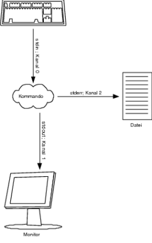
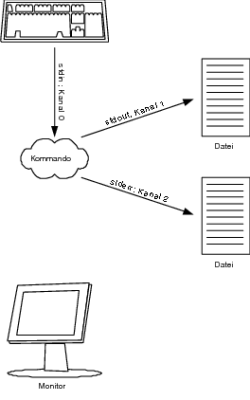
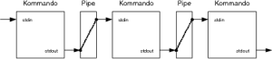
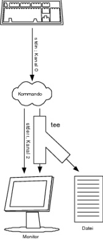

|
|
|
Natürlich können Sie auch hierbei die komplette Standardfehlerausgabe (zu erkennen an der Syntax 2> (Kanal 2)) von einem Befehl oder auch einem Script in eine Datei umleiten: you@host > find / -user you -print 2> error_find_you.dat Hiermit werden alle Fehlermeldungen in die Datei error_find_you.dat geschrieben. Existiert diese Datei noch nicht, wird sie angelegt. Sofern diese Datei allerdings präsent ist, wird der alte Inhalt in dieser Form komplett überschrieben. Wenn Sie dies nicht wollen, können Sie so wie schon bei der Standardausgabe mit >>, nur eben mit dem Kanal 2, die Standardfehlerausgabe an eine bestehende Datei anhängen (siehe Abbildung 1.3). you@host > find / -user you -print 2>> error_find_you.dat Sie können die Standardausgabe und Standardfehlerausgabe auch in zwei verschiedene Dateien umleiten. Dies wird recht häufig gemacht, denn oft hat man nicht die Zeit bzw. Übersicht, sämtliche Ausgaben zu überwachen (siehe Abbildung 1.4).  Abbildung 1.3 Umleiten der Standardfehlerausgabe (cmd 2> datei) you@host > find / -user you -print >> find_you.dat 2>> \ error_find_you.dat  Abbildung 1.4 Beide Ausgabekanäle in eine separate Datei umleiten Wollen Sie hingegen beides, also sowohl die Standardausgabe als auch die Standardfehlerausgabe in eine Datei schreiben, dann können Sie die beiden Kanäle zusammenkoppeln. Dies erledigen Sie mit der Syntax 2>&1. Damit legen Sie Kanal 2 (Standardfehlerkanal) und Kanal 1 (Standardausgabe) zusammen. Angewandt auf unser Beispiel, sieht dies folgendermaßen aus: you@host > find / -user you -print > find_you_report.dat 2>&1 So können Sie übrigens auch ein Problem mit dem Pager (less, more ...) Ihrer Wahl lösen. Testen Sie einfach Folgendes: you@host > find / -user you -print | more Gewöhnlich verwendet man ja einen Pager (im Beispiel more), um die Standardausgabe komfortabel nach oben oder unten zu scrollen, damit einem bei etwas längeren Ausgaben die Texte nicht nur so vorbeifliegen. Aber hier will das nicht so recht hinhauen, da ständig die Standardfehlerausgabe mit einer Fehlermeldung dazwischen funkt. Dies bekommen Sie einfach in den Griff, indem Sie die beiden Ausgaben zusammenlegen. you@host > find / -user you -print 2>&1 | more Alternativ können Sie auch die Standardfehlerausgabe ins Datengrab (/dev/null) befördern. you@host > find / -user you -print 2>/dev/null | more  1.10.3 Eingabe umleiten
|
||||||||||||||||||||||||||||||||||||||||||||||||||||||||||||||||||||||||||||||||||||||||||||||||||||||||||||||||||||||||||||||||||||||||||||||||||||||||||||||||||||||||||||||||||||||||||||||||||||||||||||||||||||||||||||||||||||||||||||||||||||||||||||||||||||||||||||||||||||||||||||||||||||||||||||||||||||||||||||||||||||||||||||||||||||
| Kanal | Syntax | Beschreibung |
| 1 (Standardausgabe) | cmd > file | Standardausgabe in eine Datei umlenken |
| 1 (Standardausgabe) | cmd >> file | Standardausgabe ans Ende einer Datei umlenken |
| 2 (Standardfehlerausgabe) | cmd 2> file | Standardfehlerausgabe in eine Datei umlenken |
| 2 (Standardfehlerausgabe) | cmd 2>> file | Standardfehlerausgabe ans Ende einer Datei umlenken |
| 1 (Standardausgabe) 2 (Standardfehlerausgabe) | cmd > file 2>&1 | Standardfehlerausgabe und Standardausgabe in die gleiche Datei umlenken |
| 1 (Standardausgabe) 2 (Standardfehlerausgabe) | cmd > file 2> file2 | Standardfehlerausgabe und Standardausgabe jeweils in eine extra Datei umlenken |
| 0 (Standardeingabe) | cmd < file | Eine Datei in die Standardeingabe eines Kommandos umleiten |
Bleiben wir doch beim Szenario vom Beispiel zuvor. Folgender Weg wurde gewählt, um alle Dateien des Users »you«, welche eine Zeichenfolge »audio« im Namen haben, zu finden.
you@host > find / -user you -print > find_you.dat 2>/dev/null you@host > grep audio < find_you.dat /dev/audio /dev/audio0 /dev/audio1 /dev/audio2 /dev/audio3 /home/tot/cd2audio.txt /home/you/cd2audio.txt /home/you/Documents/Claudio.dat /var/audio /var/audio/audio.txt
Mit einer Pipe können Sie das Ganze noch abkürzen und benötigen nicht einmal eine Datei, die hierfür angelegt werden muss. Hier das Beispiel mit der Pipe, womit dieselbe Wirkung wie im Beispiel eben erreicht wird.
you@host > find / -user you -print 2>/dev/null | grep audio /dev/audio /dev/audio0 /dev/audio1 /dev/audio2 /dev/audio3 /home/tot/cd2audio.txt /home/you/cd2audio.txt /home/you/Documents/Claudio.dat /var/audio /var/audio/audio.txt
Pipes werden realisiert, wenn mehrere Kommandos durch das Zeichen | miteinander verknüpft werden. Dabei wird immer die Standardausgabe des ersten Kommandos mit der Standardeingabe des zweiten Kommandos verbunden. Beachten Sie aber, dass die Standardfehlerausgabe hierbei nicht beachtet wird (siehe Abbildung 1.7).

Hier klicken, um das Bild zu Vergrößern
Abbildung 1.7 Verknüpfen mehrerer Kommandos via Pipe
Die Anzahl der Pipes, die Sie hierbei aneinander reihen können, ist unbegrenzt. Wollen Sie bspw. nicht wissen, welche und wo, sondern wie viele Dateien sich mit der Zeichenfolge »audio« auf Ihrem System befinden, müssen Sie dem Befehl zuvor nur das Kommando wc mit der Option –l (für line) »pipen«.
you@host > find / -user you -print 2>/dev/null | \ grep audio | wc -l 9
Wollen Sie die Standardausgabe eines Kommandos oder Shellscripts auf dem Bildschirm und in eine Datei oder gar mehrere Dateien gleichzeitig veranlassen, empfiehlt es sich, das Kommando tee zu verwenden.
you@host > du -bc | sort -n | tee februar05.log 8 ./bin 48 ./.dia/objects 48 ./.dia/shapes 48 ./.dia/sheets 48 ./.gconf 48 ./.gnome ... 1105091 ./OpenOffice.org1.1/user 1797366 ./OpenOffice.org1.1 1843697 ./.thumbnails/normal 1944148 ./.thumbnails 32270848 . 32270848 insgesamt
Im Beispiel wird die Plattenplatznutzung nach Bytes sortiert ausgegeben und, dank tee, in die Datei februar05.log geschrieben. Hier können Sie natürlich auch in mehr als einer Datei schreiben.
you@host > du -bc | sort -n | tee februar05.log year05.log 8 ./bin 48 ./.dia/objects 48 ./.dia/shapes 48 ./.dia/sheets 48 ./.gconf 48 ./.gnome ... 1105091 ./OpenOffice.org1.1/user 1797366 ./OpenOffice.org1.1 1843697 ./.thumbnails/normal 1944148 ./.thumbnails 32270848 . 32270848 insgesamt
Aber gerade, wenn Sie bei Log-Dateien einen regelmäßigen Jahresbericht erstellen wollen, sollten Sie tee mit der Option –a (append) verwenden. Damit wird die Ausgabe eines Kommandos bzw. des Shellscripts an die Datei(en) angefügt und nicht – wie bisher – überschrieben (siehe Abbildung 1.8).

Hier klicken, um das Bild zu Vergrößern
Abbildung 1.8 Das Kommando tee im Einsatz
Als Ersatzmuster (Wildcards) werden bestimmte Zeichen(-folgen) eines Wortes bezeichnet, die von der Shell durch eine andere Zeichenkette ersetzt werden. In der Shell werden hierzu die Zeichen * ? [ ] verwendet. Das heißt, findet die Shell bei der Analyse eines dieser Zeichen, geht der Interpreter davon aus, dass es sich hier um ein Ersatzmuster für andere Zeichen handelt. Die Shell sucht jetzt bspw. im Verzeichnis nach Dateien (Namen), welche auf dieses Muster (nach den von der Shell vorgegebenen Regeln) passen, und ersetzt die entsprechenden Wildcards in der Kommandozeile durch eine Liste mit gefundenen Dateien (Namen). Es wird dabei im Fachjargon von einer Dateinamen-Expansion oder auch von Globbing gesprochen.
|
Hinweis Diese Namens-Expansion findet noch vor Ausführung des Kommandos in der Shell statt. Das Kommando selbst bekommt von diesem Vorgang nichts mehr mit. Die Argumente des Kommandos sind schon die expandierten Dateinamen. |
Das Zeichen * steht für eine beliebige Zeichenfolge im Dateinamen. Das Sternchen wurde selbst schon zu DOS-Zeiten verwendet und ist das am meisten angewandte Wildcard-Zeichen. Einfaches Beispiel:
you@host > grep Backup /home/tot/Mails/*.txt
Hier wird in allen Dateien mit der Endung ».txt« im Verzeichnis /home/tot/Mails nach dem Wort »Backup« gesucht. Die Position des Zeichens * können Sie im Suchwort fast beliebig wählen. Hier einige Beispiele:
you@host > ls *ript myscript you@host > ls *ript* myscript scripter you@host > ls ript* /bin/ls: ript*: Datei oder Verzeichnis nicht gefunden you@host > ls text*.txt text1.txt text2.txt text3.txt texta.txt textb.txt textc.txt textdatei_test.txt
Stimmt keine der Dateien mit dem gewünschten Muster überein, wird entweder eine dem Kommando entsprechende Fehlermeldung oder (bspw. mit echo) die Zeichenkette des Musters unverändert zurückgegeben.
Im Gegensatz zum Zeichen * wird das Metazeichen ? als Platzhalter für nur ein beliebiges Zeichen verwendet. Das heißt, wird das Zeichen ? verwendet, muss sich an dieser Stelle ein (und wirklich nur ein) beliebiges Zeichen befinden, damit das Muster übereinstimmt. Zur Demonstration einfach eine Gegenüberstellung, bei der zuerst das Metazeichen * und gleich darauf mit denselben Angaben das Zeichen ? verwendet wird:
you@host > ls datei*.dat datei1.dat datei1b.dat datei1c.dat datei2.dat datei2b.dat datei_backup.dat datei1.dat~ you@host > ls datei?.dat datei1.dat datei2.dat you@host > ls datei1.dat? datei1.dat~
Meistens werden Sie wohl mit den Metazeichen * und ? zufrieden sein und größtenteils auch ans Ziel kommen. Dennoch kann die Bestimmung eines Dateinamens ausgeweitet werden. Sie können zusätzlich noch definieren, welche Zeichen für eine Ersetzung in Frage kommen sollen. Hierzu werden die eckigen Klammern ([ ]) verwendet. Alles, was sich darin befindet, wird als gültiges Zeichen des Musters für die Ersetzung akzeptiert.
you@host > ls datei*.txt datei1a.txt datei1b.txt datei1.txt datei2a.txt datei2.txt datei3.txt you@host > ls datei[12].txt datei1.txt datei2.txt you@host > ls datei[12]*.txt datei1a.txt datei1b.txt datei1.txt datei2a.txt datei2.txt you@host > ls datei[123].txt datei1.txt datei2.txt datei3.txt you@host > ls datei[1–3].txt datei1.txt datei2.txt datei3.txt you@host > ls datei[12][a].txt datei1a.txt datei2a.txt you@host > ls datei[12][b].txt datei1b.txt you@host > ls datei[!12].txt datei3.txt
Im Beispiel konnten Sie erkennen, dass Sie – statt alle möglichen Zeichen in eckigen Klammern aneinander zu reihen – auch mit einem Minuszeichen einen Bereich bestimmen können. Vorausgesetzt, das bzw. die Zeichen liegen in einem laufenden Bereich der ASCII-Tabelle. So passen z. B. mit datei[0–9].txt alle Dateinamen von 0 bis 9 in das Muster (datei1.txt, datei2.txt ... datei9.txt). Wird der Wert zweistellig, können Sie entweder datei[0–9][0–9].txt oder datei[0–9]*.txt verwenden. Wobei beide Versionen wieder unterschiedliche Ersetzungen durchführen, da die erste Version nur zwei dezimale Zeichen und die zweite Version beliebig viele weitere Zeichen enthalten darf.
Wollen Sie hingegen nur Dateinamen erhalten, die neben der dezimalen Zahl einen weiteren Buchstaben enthalten, können Sie auch datei[0–9][a–z].txt verwenden. Natürlich können Sie in den eckigen Klammern noch mehrere Bereiche (allerdings müssen diese immer fortlaufend gemäß der ASCII-Tabelle sein) verwenden. So liefert datei[a–cg–j1–3].txt Ihnen beispielsweise als Ergebnisse zurück, worin sich eines der Zeichen »a« bis »c«, »g« bis »j« und 1 bis 3 befindet.
Wollen Sie hingegen in den eckigen Klammern einzelne oder eine Folge von Zeichen ausschließen, dann können Sie die Expansion mittels ! auch negieren. Bspw. liefert Ihnen datei[!12].txt alles zurück, was als nächstes Zeichen nicht 1 oder 2 enthält (wie im Beispiel gesehen).
Des Weiteren können Sie die Expansionen mit den Metazeichen * und ? erweitern (allerdings nicht innerhalb der eckigen Klammer).
Wollen Sie die Datei-Expansionen in Aktion sehen, können Sie mit set die Debugging-Option –x setzen. Dann sehen Sie die Zeilen, nachdem eine Datei-Expansion ausgeführt wurde (Selbiges können Sie selbstverständlich auch mit den Metazeichen * und ? herbeiführen), zum Beispiel:
you@host > set -x
you@host > ls datei[12].txt
[DEBUG] /bin/ls datei1.txt datei2.txt
datei1.txt datei2.txt
you@host > ls datei[!12].txt
[DEBUG] /bin/ls datei3.txt
datei3.txt
you@host > ls datei[1–3]*.txt
[DEBUG] /bin/ls datei10.txt datei1a.txt datei1b.txt datei1.txt
datei2a.txt datei2.txt datei3.txt
datei10.txt datei1b.txt datei2a.txt datei3.txt
datei1a.txt datei1.txt datei2.txt
Die Bash und die Korn-Shell bieten hierbei außerdem vordefinierte Parameter als Ersatzmuster an. Wollen Sie etwa nur Groß- und Kleinbuchstaben zulassen, können Sie hierfür statt [a–zA–Z] auch [:alpha:] verwenden. Sollen es nur dezimale Ziffern sein, dann kann [:digit:] statt [1–9] verwendet werden. In der Praxis sieht dies folgendermaßen aus:
you@host > ls datei[[:digit:]].txt datei1.txt datei2.txt datei3.txt you@host > ls datei[[:digit:]][[:alpha:]].txt datei1a.txt datei1b.txt datei2a.txt
Selbstverständlich können Sie auch hier den Wert in den eckigen Klammern mit ! negieren. In Tabelle 1.5 finden Sie die Zeichenmengen, die Sie alternativ zur gängigen Schreibweise in den eckigen Klammern setzen können.
| Zeichenmenge | Bedeutung |
| [:alnum:] | Buchstaben, Unterstrich und dezimale Ziffern |
| [:alpha:] | Groß- und Kleinbuchstaben |
| [:digit:] | Dezimale Ziffern |
| [:lower:] | Kleinbuchstaben |
| [:upper:] | Großbuchstaben |
| [:print:] | Nur druckbare Zeichen |
| [:space:] | Leerzeichen, Tabulator ... |
Sollten Sie sich fragen, was mit den versteckten Dateien ist (das sind Dateien, die mit einem Punkt beginnen) bzw. wie Sie diese bei der Datei-Expansion mit einbeziehen können, so ist die Antwort nicht schwer. Sie müssen den Punkt explizit mit angeben, dann werden auch die versteckten Dateien beachtet.
you@host > ls *.conf /bin/ls: *.conf: Datei oder Verzeichnis nicht gefunden you@host > ls .*.conf .xyz.conf .abc.conf
|
Tipp In der Bash können Sie die versteckten Dateien auch ohne explizite Angabe des Punkts verwenden. Hierbei müssen Sie einfach mit shopt -s dotglob die Option glob_dot_filenames setzen. Deaktivieren können Sie das Ganze wieder mit shopt -u dotglob. |
Mit der Brace Extension haben Sie eine weitere neue Form, um Muster formulieren zu können. Dieses Feature steht unter der Bourne-Shell nicht zur Verfügung. Das Prinzip ist recht einfach: Bei einer gültigen Brace Extension schreibt man Alternativ-Ausdrücke zwischen geschweifte Klammern getrennt von einem Komma zwischen den beiden Klammern. Die Syntax hierzu lautet:
präfix{ muster1, muster2 }suffix
Von der Shell wird dieses Muster folgendermaßen ausgewertet: Vor jeder Zeichenkette – innerhalb der geschweiften Klammern – wird das Präfix gesetzt und dahinter das Suffix angehängt. Es ist einfacher, als es sich anhört. So generiert aus der Syntaxbeschreibung die Shell zum Beispiel den Dateinamen präfixmuster1suffix und präfixmuster2suffix. Natürlich können noch weitere Alternativ-Ausdrücke in den geschweiften Klammern gesetzt werden.
Wollen Sie bspw. mehrere Dateien wie prozess.dat, process.dat und progress.dat gleichzeitig anlegen, dann könnten Sie hierfür die Brace Extension wie folgt einsetzen:
you@host > touch pro{z,c,gr}ess.dat
you@host > ls *.dat
process.dat progress.dat prozess.dat
Brace Extensions lassen sich aber auch verschachteln. Wollen Sie bspw. die Dateinamen dateiorginal.txt, dateiorginal.bak, dateikopie.txt und dateikopie.bak mit einer Brace Extension erzeugen, so wird dies folgendermaßen realisiert:
you@host > touch datei{orginal{.bak,.txt},kopie{.bak,.txt}}
you@host > ls datei*
dateikopie.bak dateikopie.txt dateiorginal.bak dateiorginal.txt
Natürlich können Sie hier auch eine wilde Wildcard-Orgie veranstalten und alle bisher kennen gelernten Wildcards verwenden.
you@host > ls datei{*{.bak,.txt}}
dateikopie.bak dateikopie.txt dateiorginal.bak dateiorginal.txt
Und es gibt noch eine weitere Möglichkeit, Muster-Alternativen für Namen zu beschreiben, die zwar eher für Muster-Vergleiche von Zeichenketten und weniger im Bereich der Datei-Expansion eingesetzt werden, allerdings auch dafür verwendet werden können. Damit Ihnen diese Muster-Alternativen auch für die Bash zur Verfügung stehen, müssen Sie die Option extglob mit shopt (Abkürzung für shell option) ausschalten (shopt –s extglob).
you@host > ls *.dat process.dat progress.dat prozess.dat you@host > shopt -s extglob you@host > ls @(prozess|promess|process|propan).dat process.dat prozess.dat you@host > ls !(prozess|promess|process|propan).dat progress.dat
In Tabelle 1.6 sind die einzelnen Möglichkeiten für solche Muster-Alternativen zusammengestellt:
| Muster-Alternativen | Bedeutung |
| @(pattern1 | patter2 | ... | patternN) | Eines der Muster |
| !(pattern1 | patter2 | ... | patternN) | Keines der Muster |
| +(pattern1 | patter2 | ... | patternN) | Mindestens eines der Muster |
| ?(pattern1 | patter2 | ... | patternN) | Keines oder eines der Muster |
| *(pattern1 | patter2 | ... | patternN) | Keines, eines oder mehrere Muster |
Das Tilde-Zeichen ~ wird von der Bash und der Korn-Shell als Heimverzeichnis des aktuellen Benutzers ausgewertet. Hier einige typische Aktionen, die mit dem Tilde-Zeichen in der Bash und Korn-Shell durchgeführt werden:
you@host > pwd /home/you you@host > cd /usr you@host > echo ~ /home/you you@host > cd ~ you@host > pwd /home/you you@host > echo ~- /usr you@host > echo ~+ /home/you you@host > cd ~- you@host > echo ~- /home/you you@host > cd ~- you@host > pwd /home/you you@host > echo ~tot /home/you you@host > mkdir ~/new_dir
Tabelle 1.7 zeigt, wie die einzelnen Tilde-Expansionen eingesetzt werden und ihre jeweilige Bedeutung.
| Angabe | Bedeutung |
| ~ | Heimverzeichnis des eingeloggten Benutzers |
| ~BENUTZERNAME | Heimverzeichnis eines angegebenen Benutzers |
| ~– | Verzeichnis, das zuvor besucht wurde |
| ~+ | Aktuelles Arbeitsverzeichnis (wie pwd) |
Wie hat Ihnen das <openbook> gefallen? Wir freuen uns immer über Ihre freundlichen und kritischen Rückmeldungen.
>> Zum Feedback-Formular| << zurück |
|
||||||||||||
|
||||||||||||
|
||||||||||||
Copyright © Rheinwerk Verlag GmbH 2005
Für Ihren privaten Gebrauch dürfen Sie die Online-Version natürlich ausdrucken. Ansonsten unterliegt das <openbook> denselben Bestimmungen, wie die gebundene Ausgabe: Das Werk einschließlich aller seiner Teile ist urheberrechtlich geschützt. Alle Rechte vorbehalten einschließlich der Vervielfältigung, Übersetzung, Mikroverfilmung sowie Einspeicherung und Verarbeitung in elektronischen Systemen.


 bestellen
bestellen